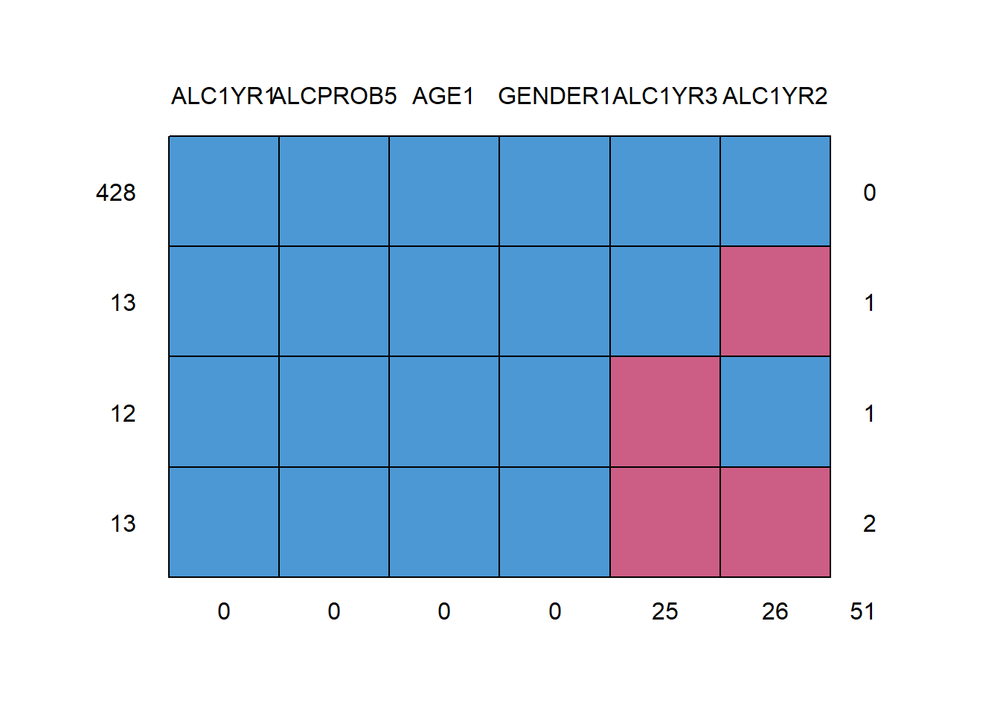
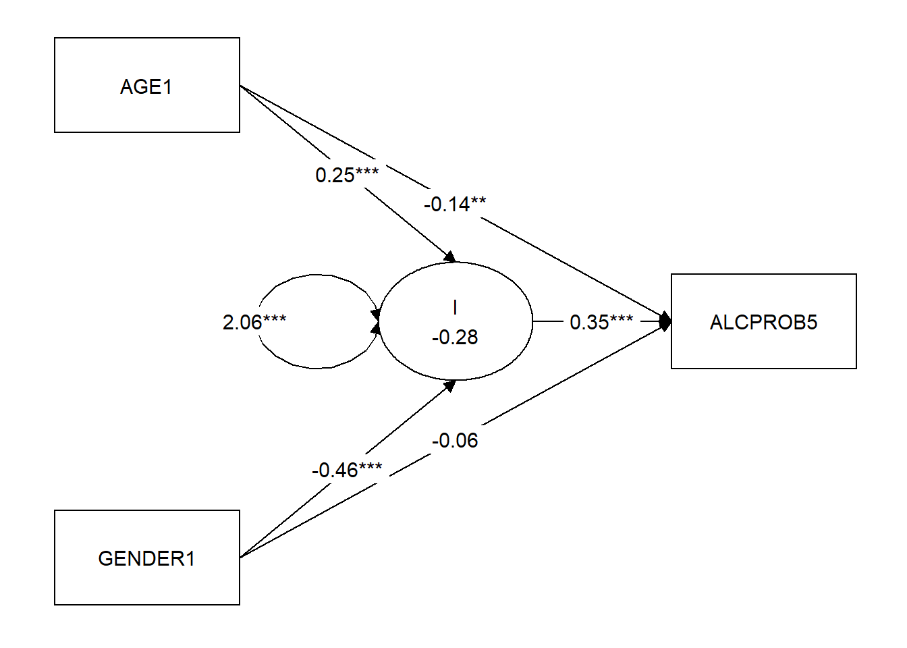

2.2 Exercise 2: Alcohol use
The figure below depicts the basic Latent Growth model for the alcohol use data from Duncan, Duncan & Strycker example 8_1.

Latent Growth model for alcohol
The data are in the file DDS8_1.dat, with variables ALC1YR1 ALC1YR2 ALC1YR3 ALCPROB5 AGE1 and
GENDER1. Missing values are coded as -99. The variable ALCPROB5 is categorical, it indicates alcohol problems in
year 5 of the study (0=no, 1=yes).
First, load the file DDS8_1.dat into the R environment. For convenience’s sake, rename the columns of the data object to something a human would understand:
data <- read.table("DDS8_1.dat", na.strings = -99)
names(data) <- c("ALC1YR1", "ALC1YR2", "ALC1YR3",
"ALCPROB5", "AGE1", "GENDER1")Now, examine the patterns of missing data. For this, you could use Mplus,
or in R, you can use the mice package:
install.packages("mice")
library(mice)
md.pattern(data) ALC1YR1 ALCPROB5 AGE1 GENDER1 ALC1YR3 ALC1YR2
428 1 1 1 1 1 1 0
13 1 1 1 1 1 0 1
12 1 1 1 1 0 1 1
13 1 1 1 1 0 0 2
0 0 0 0 25 26 51
The missing data pattern shows that the majority of the cases is complete, there is a small amount of attrition over time (panel dropout).
2.2.1 Exercise 2a
Set up the growth curve model as depicted in the Figure in Mplus.
As a starting point, use the MplusAutomation code below.
- Add the necessary syntax statements to finalize the syntax.
- Request sample statistics and standardized (STDYX) output.
- Inspect the output carefully with special attention for
- how well the model fits
- interpretation of the output; how well does the model predict alcohol use over the years?
m0 <- mplusObject(
TITLE = "LGA MODEL",
MODEL = "",
OUTPUT = "",
rdata = data,
usevariables = c("ALC1YR1", "ALC1YR2", "ALC1YR3"))Click to show answers
Here is an example of how to approach the problem:
m0 <- mplusObject(
TITLE = "LGA MODEL",
MODEL = "i s | ALC1YR1@0 ALC1YR2@1 ALC1YR3@2;",
OUTPUT = "SAMPSTAT standardized;",
PLOT = "SERIES = ALC1YR1 ALC1YR2 ALC1YR3 (s);
TYPE = PLOT3;",
rdata = data,
usevariables = c("ALC1YR1", "ALC1YR2", "ALC1YR3"),
modelout = "m0.inp",
run = 1L)
# Missing data patterns:
get_data_summary(m0)
# Fit
SummaryTable(m0, keepCols = c("Filename", "Parameters", "ChiSqM_Value", "ChiSqM_DF",
"ChiSqM_PValue", "LL", "CFI", "TLI", "RMSEA_Estimate", "SRMR"))
# Parameters
tab <- tidySEM::table_results(m0, columns = NULL)
tab[tab$paramheader == "Means", c("label", "est_sig", "pval")]The model fit should be very good, with non-significant chi-square, and good fit according to CFL/TLI. The intercept and slope means indicate a relatively high starting point (3.68) and a growth of 0.92 per year. The Intercept and Slope show considerable variance, indicating that the starting points and rates of growth differ considerably across individuals.
2.2.2 Exercise 2b
We will now explore how different predictor variables affect the model fit.
Include gender and age in the model as predictors of the intercept and slope. Interpret the fit of the model
and the output.
Feel free to estimate several models, including or excluding certain covariates.
Either make a model fit table by hand in a spreadsheet, or use SummaryTable() to request the fit indices you deem to be appropriate.
Which model do you consider to be best?
2.2.2.1 Exploratory vs confirmatory research
Note that when you conduct confirmatory research, and are testing theoretical hypotheses, you should not add and omit paths based on exploratory analyses and model fit.
It is fine to add and remove paths in exploratory research. Model fit indices, like AIC and BIC, are suitable for selecting well-fitting models in exploratory research. P-values are not designed for variable selection, and using them for that purpose may lead to suboptimal models.
It is good scientific practice to clearly separate confirmatory and exploratory research. When you conduct exploratory research, you should not perform inference on the resulting parameters based on p-values (because inference generalizes your findings to the population, and exploratory findings tend to be tailored toward this specific sample). You should also not present exploratory results as if they were testing a post-hoc theory (“Hypothesizing After the Results are Known,” or HARKing, is a questionable research practice and can lead to false-positive (spurious) findings.
Click to show answers
The answers to Exercise 1a demonstrate how to approach this.
Estimate multiple slightly different models, put them in a list, and run SummaryTable().
Then use the AIC and BIC to identify the best-fitting model,
and assess how different the model fits are.
Also consider using RMSEA, CFI, TLI, and SRMR to make sure that your best-fitting
model has acceptable objective fit.
# Create a vector with three "additional syntaxes"
# for my three different models
mod = c("i s ON GENDER1;",
"i s ON AGE1;",
"i s ON AGE1 GENDER1;",
"i ON GENDER1;",
"i ON AGE1;",
"i ON AGE1 GENDER1;",
"s ON GENDER1;",
"s ON AGE1;",
"s ON AGE1 GENDER1;",
"i WITH s@0;",
"!baseline")
# Create a list with the additional usevariables
# used in the three models above
vars = list("GENDER1",
"AGE1",
c("GENDER1", "AGE1"),
"GENDER1",
"AGE1",
c("GENDER1", "AGE1"),
"GENDER1",
"AGE1",
c("GENDER1", "AGE1"),
NULL,
NULL)
# Make a list of exploratory models by modifying m0
models <- lapply(1:length(mod), function(i){
# append element i of mod
m0$MODEL <- paste0(m0$MODEL, mod[i])
# append element i of vars
m0$usevariables <- c(m0$usevariables, vars[[i]])
# Add unique filename
m0$modelout = paste0("Model", i, ".inp")
# return the modified model
m0
})
# Run all models and store results in a list called results
results <- lapply(models, mplusModeler, run = 1L)
# Get summary table and store it in 'tab'
tab <- SummaryTable(results,
keepCols = c("Parameters", "AIC", "BIC",
"RMSEA_Estimate", "CFI",
"TLI", "SRMR"),
sortBy = NULL)
# Order by BIC
tab <- tab[order(tab$BIC), ]
# Add model syntax to the table
tab <- cbind(Model = mod, tab)
tab| Model | Parameters | AIC | BIC | RMSEA_Estimate | CFI | TLI | SRMR |
|---|---|---|---|---|---|---|---|
| i s ON GENDER1; | 12 | 5129 | 5178 | 0.03 | 0.99 | 0.98 | 0.02 |
| i s ON AGE1; | 10 | 5140 | 5181 | 0.03 | 1.00 | 0.98 | 0.02 |
| i s ON AGE1 GENDER1; | 9 | 5166 | 5204 | 0.12 | 0.81 | 0.71 | 0.07 |
| i ON GENDER1; | 8 | 5176 | 5209 | 0.06 | 0.99 | 0.97 | 0.02 |
| i ON AGE1; | 10 | 5168 | 5209 | 0.05 | 0.99 | 0.96 | 0.02 |
| i ON AGE1 GENDER1; | 8 | 5179 | 5212 | 0.15 | 0.80 | 0.69 | 0.08 |
| s ON GENDER1; | 9 | 5199 | 5237 | 0.16 | 0.66 | 0.48 | 0.10 |
| s ON AGE1; | 8 | 5207 | 5240 | 0.15 | 0.76 | 0.63 | 0.08 |
| s ON AGE1 GENDER1; | 8 | 5208 | 5241 | 0.20 | 0.66 | 0.48 | 0.11 |
| i WITH s@0; | 8 | 5211 | 5244 | 0.16 | 0.74 | 0.60 | 0.08 |
| !baseline | 7 | 5217 | 5246 | 0.22 | 0.74 | 0.61 | 0.09 |
# Plot the BICs and annotate with the syntax to see which is best
library(ggplot2)
qplot(x = 1:11, y = tab$BIC) +
geom_line() +
geom_text(label = tab$Model, size = 2)
It looks like, paradoxically, predicting I and S from either age or gender has the best fit. However, note that there is only a small difference between the smallest and the largest BIC: 67.36. I would either go for the simplest model (i WITH s@0), or go for the best-fitting model (i s ON GENDER1).
Note that the covariance between intercept and slope disappears from the model when you add predictors, as this turns it into a covariance between a latent variable and a residual. Mplus automatically constrains these to zero. If we add the statement I WITH S to the model, we obtain a good fit with significant effects of both gender and age on the intercept. NOTE: This illustrates the importance of checking the output carefully to find out if Mplus is actually doing what you think it does!
2.2.3 Exercise 2c
Include alcohol problems in year 5 in the model: let the intercept and slope factors predict alcohol problems year 5. Declare the variable as categorical in the variable section (CATEGORICAL = ALCPROB5). Inspect if the effect of age and gender on alcohol problems year 5 is completely mediated by the growth factors, or if there are additional direct paths from age and gender on the alcohol problems.
Click to show answers
The model fit is still good. Note that after adding a categorical dependent variable to the model, Mplus switches to a robust estimator (MLR). Both intercept and slope predict alcohol problems. Age also predicts alcohol problems directly. Since age predicts alcohol problems both directly and via the intercept, a mediation analysis is in order. This shows that the indirect effect of age via the intercept on alcohol problems is still significant when the direct effect is added to the model.
To test whether there is full mediation or not, we may want to test whether the direct effects are equal to zero or not.
If the analysis had not included a categorical dependent variable,
then we would have been able to compute the difference test using the tidySEM
function chisq_sb(SummaryTable(keepCols = NULL)).
However, in the presence of a categorical dependent variable, we must use Mplus’
option difftest.
Again, we can start from m0:
# Specify model with only indirect effects
m2c_indirect <- m0
m2c_indirect$usevariables <- c(
m2c_indirect$usevariables,
"AGE1", "GENDER1", "ALCPROB5")
m2c_indirect$VARIABLE <- "CATEGORICAL = ALCPROB5;"
m2c_indirect$MODEL <- paste0(
m0$MODEL,
"i on AGE1 GENDER1;
i WITH s;
ALCPROB5 on i s;
ALCPROB5 on AGE1 GENDER1;")
m2c_indirect$SAVEDATA <- "difftest is mediation.dat;"
m2c_indirect$modelout <- "m2c_indirect.inp"
# Run all models and store results in a list called results
result_ind <- mplusModeler(m2c_indirect, run = 1L)
# Specify model with direct effects too
m2c_direct <- m2c_indirect
# Constrain direct effects to 0 using gsub (replace)
m2c_direct$MODEL <- gsub("ALCPROB5 on AGE1 GENDER1;",
"ALCPROB5 on AGE1 GENDER1@0;",
m2c_direct$MODEL,
fixed = TRUE)
m2c_direct$ANALYSIS <- "difftest = mediation.dat;"
m2c_direct$modelout <- "m2c_direct.inp"
# Run the direct model, which includes the difference test
result_dir <- mplusModeler(m2c_direct, run = 1L)
# Look at the model summaries
get_summaries(result_dir)Note that the ChiSqDiffTest_PValue is non-significant, which means we can prefer the simpler (no direct effects) model. There is full mediation.
Let’s use a graph to examine the unconstrained model too:
lo <- get_layout("AGE1", "", "",
"", "I", "ALCPROB5",
"GENDER1", "", "", rows = 3)
graph_sem(result_ind, layout = lo)